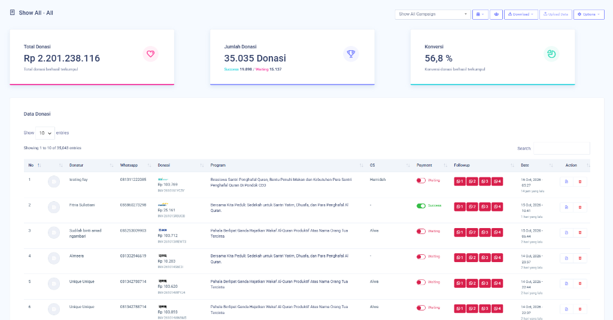
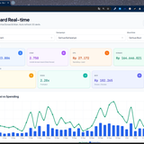
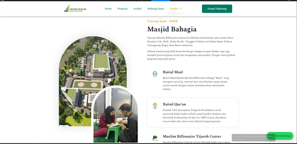
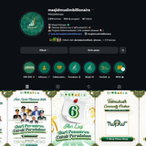
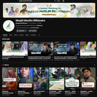

KAMPANYE IKLAN DONASI & WAKAF PRODUKTIF
Tembus Rp 2,2 Miliar dari 35.000+ Donatur
Menghimpun donasi umat melalui periklanan digital berbayar untuk program Beasiswa Santri Penghafal Al-Qur'an Pondok CEO, Sedekah Yatim/Dhuafa, dan Wakaf Al-Qur'an Produktif Masjid Muslim Billionaire.
- Merancang dan mengoptimalkan kampanye iklan berbayar di Meta Ads (Facebook & Instagram) dan Google Ads secara end-to-end.
- Menentukan target audiens presisi dan riset keyword berniat tinggi untuk memaksimalkan jangkauan syiar.
- Mengontrol efisiensi anggaran iklan harian agar setiap rupiah terpakai tepat sasaran tanpa boncos.
- Mendesain materi iklan visual (banner, video) dengan hook 3 detik pertama yang menarik perhatian.
- Mengintegrasikan WhatsApp funnel multi-tahap (F1–F4) agar donatur mudah berinfaq seketika.
- Total Donasi Terkumpul: Rp 2.201.238.116
- Jumlah Transaksi: 35.035 donasi tercatat (19.898 sukses)
- Tingkat Konversi: 56,8%
Lead Digital Ads Strategy & Conversion Specialist: kemampuan mengelola kampanye periklanan digital skala besar dengan akuntabilitas anggaran dan target hasil nyata.

SISTEM MANAJEMEN DIGITAL MARKETING & DASHBOARD REAL-TIME
Pemantauan multi-kampanye dengan auto-refresh 30 detik
Membangun sistem dashboard real-time untuk memantau performa seluruh kampanye iklan digital secara terpusat, mengontrol pengeluaran iklan, dan memvisualisasikan grafik Spend vs Revenue.
- Merancang arsitektur sistem dashboard pemantauan multi-kampanye & multi-akun iklan.
- Mengimplementasikan fitur auto-refresh data setiap 30 detik secara otomatis.
- Membuat visualisasi grafik Spend vs Revenue untuk pengambilan keputusan cepat.
- Mengintegrasikan kontrol pengeluaran iklan agar budget tetap efisien.
- Omset Terpantau: Rp 164.046.021
- Rata-rata ROAS: 2.28x
- Rata-rata CTR: 2.75%
- Pembaruan Data: Auto-Refresh 30 Detik

WEBSITE RESMI MASJID MUSLIM BILLIONAIRE
masjidmuslimbillionaire.com — Portal digital jamaah
Membangun website resmi masjid sebagai portal pusat informasi digital jamaah: jadwal sholat harian, agenda kajian akbar, serta sistem donasi dan infaq yang ringan dan cepat dibuka dari HP.
- Merancang UI/UX design dari wireframe hingga tampilan akhir dengan pendekatan mobile-first.
- Mengoding seluruh frontend menggunakan HTML5, CSS3, dan JavaScript murni.
- Mengoptimalkan performa agar waktu loading di bawah 1 detik pada jaringan 3G/4G.
- Mengintegrasikan WhatsApp click-to-chat untuk pendaftaran kegiatan secara langsung.
- Mengelola domain, hosting, dan pembaruan konten website secara berkala.
- Waktu Loading: Di bawah 1 detik (< 1.0s)
- Responsif: 100% optimal di ponsel
- Akses: Ribuan jamaah mengakses informasi secara mandiri
- Live: masjidmuslimbillionaire.com ↗

KONTEN HARIAN & VIDEO REELS DAKWAH INSTAGRAM
Interaksi akun melonjak +140%, viewers tembus 45.2K
Menyusun jadwal postingan sebulan penuh dan memproduksi video pendek reels untuk mengangkat sisi humanis keseharian santri dan marbot, inspirasi dakwah, serta ajakan kebaikan yang santai.
- Menyusun content calendar bulanan dengan tema-tema yang relevan untuk jamaah muda.
- Memproduksi video Reels di CapCut dengan editing dinamis dan caption storytelling.
- Mendesain poster dan feed visual di Canva untuk konsistensi branding masjid.
- Menulis copywriting dakwah santai yang meningkatkan engagement organik.
- Interaksi: Melonjak hingga +140%
- Viewers: Tembus 45.2K views
- Platform: Instagram @aldi.wiyono & akun resmi masjid

KONTEN YOUTUBE DAKWAH MASJID MUSLIM BILLIONAIRE
Dokumentasi kajian & syiar digital lewat YouTube
Memproduksi dan mengelola konten video YouTube untuk mendokumentasikan kajian akbar, ceramah rutin, dan kegiatan masjid agar dakwah bisa diakses jamaah yang tidak bisa hadir langsung.
- Merekam dan mengedit video kajian akbar dan ceramah ustadz di masjid.
- Mengoptimalkan judul, deskripsi, dan thumbnail untuk discoverability YouTube.
- Mengelola jadwal upload dan interaksi dengan subscriber.
